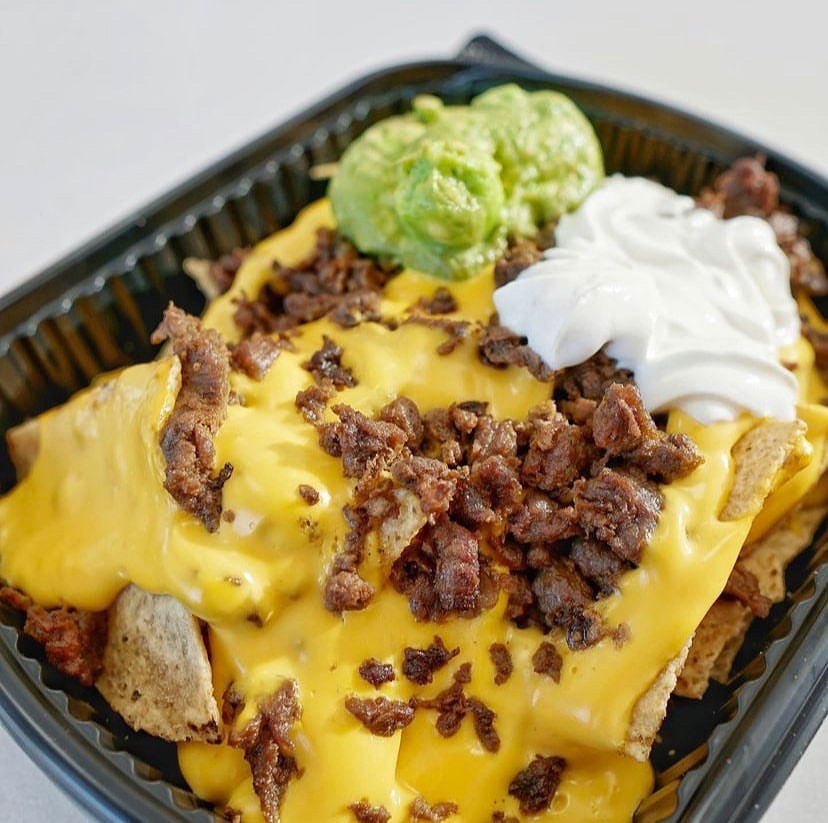
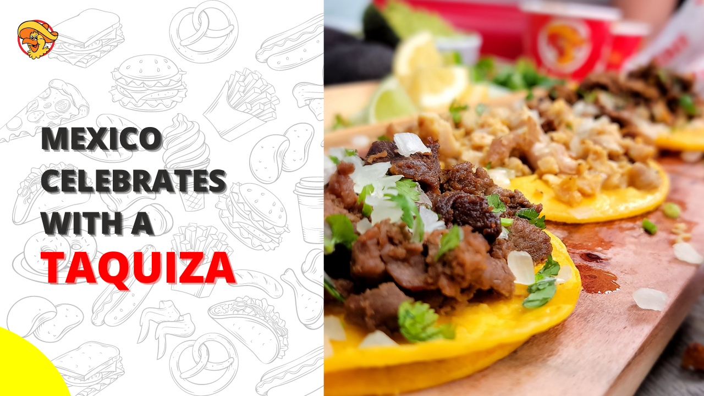
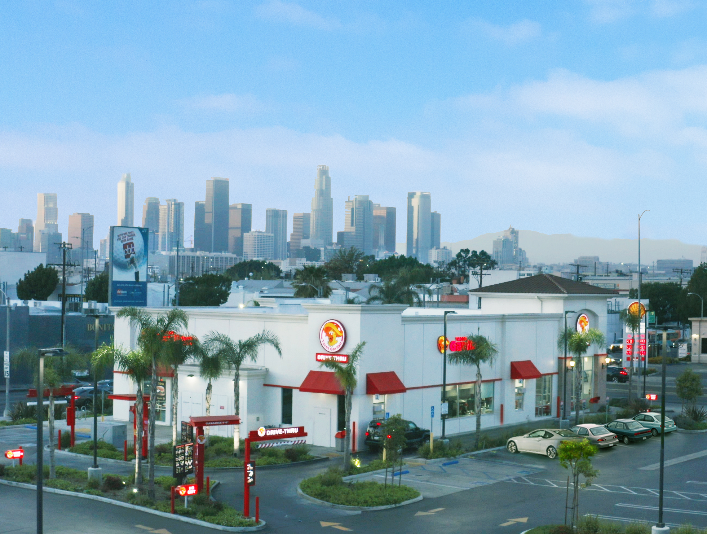
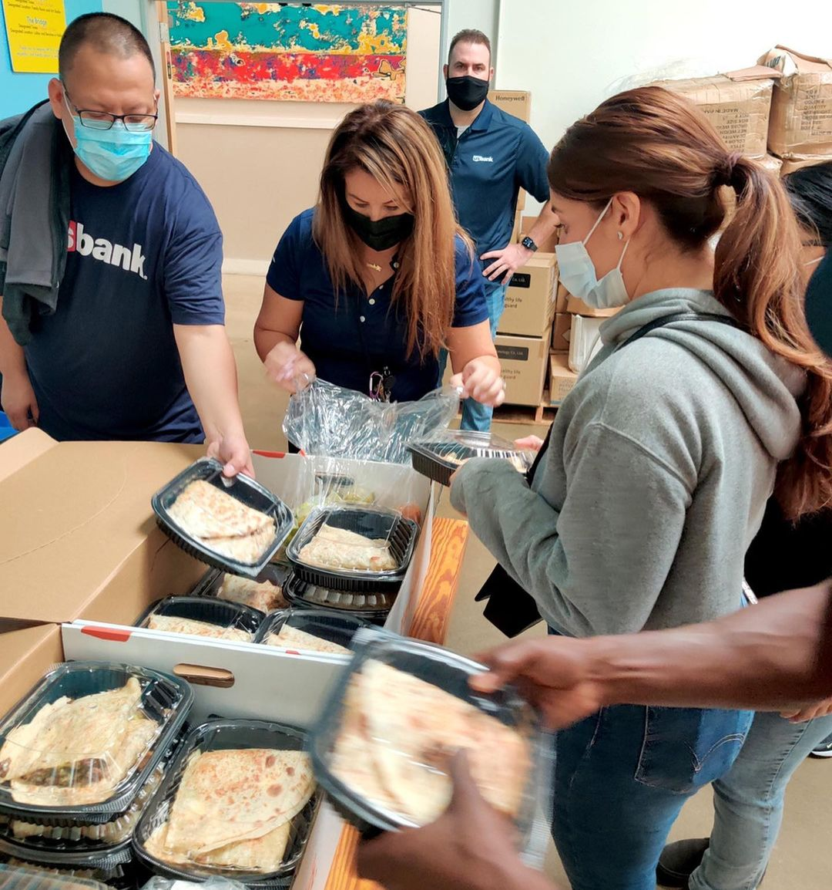
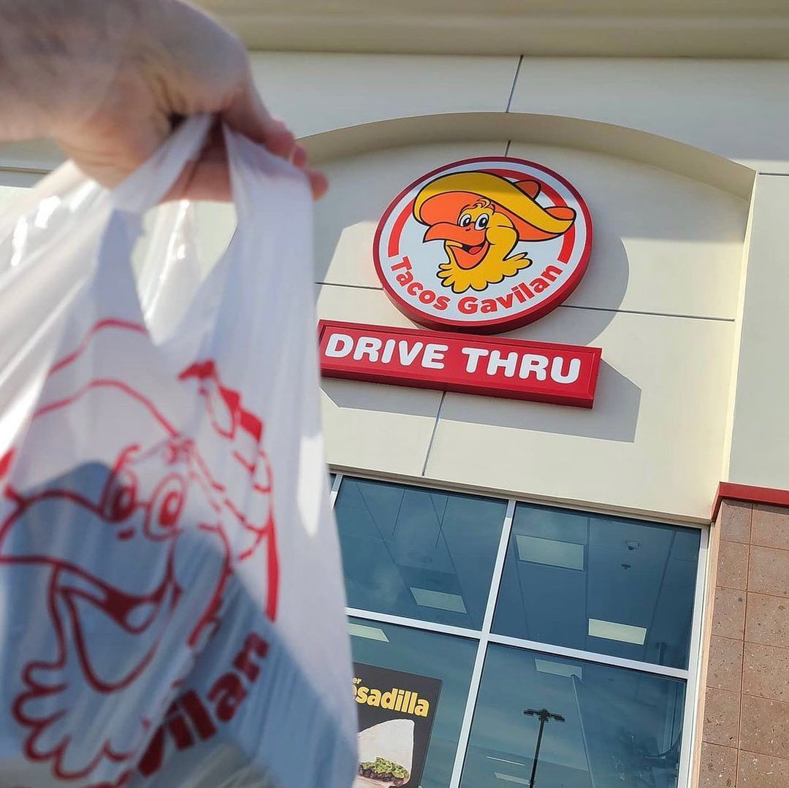

Tacos Gavilan Blog
Explore our culinary roots, authentic recipes, holiday fiesta catering guides, and community initiatives in Southern California.

Culinary TraditionsThe Best Champurrado Near Me
During a chilly night, nothing beats peak coziness with a warm cup of authentic Mexican champurrado. Discover the history and where to find the best champurrado in Southern California.

Culture & CateringMexico Celebrates with a Taquiza
Taquiza, also known as a taco party, is a highlight of gatherings, celebrations, holidays, and family in the Mexican tradition. Learn how the Taquiza tradition is reborn in Los Angeles.

Our StoryHistory of Tacos Gavilan
Founded on the corner of Gage & Main in Los Angeles in 1992, Tacos Gavilan has grown into a beloved Southern California fast-casual Mexican food icon across 15 locations.

Holiday CateringTacos Gavilan Thanksgiving Fiesta Platter Is Here
Tacos for Thanksgiving? Take the stress out of holiday cooking with all-inclusive homestyle taco Fiesta Platters, perfect for family feasts, pre-game snacks, and holiday gatherings.

Local GuidesTop 5 Mexican Foods To Try In Azusa, CA
Exploring Mexican cuisine in Azusa? Here are the top 5 authentic Mexican dishes you need to try at Tacos Gavilan on Arrow Hwy, from sizzling Carne Asada to traditional Al Pastor.
 Community & Giving Back
Community & Giving Back
First Annual Taco Eating Contest Celebrates Hispanic Heritage Month
Tacos Gavilan partnered with South Central non-profit A Place Called Home and LAFC goalkeeper Pablo Sisniega to host an unforgettable community taco eating contest with $1,500 grand prizes.
 Food Reviews
Food Reviews
Discovering The Best Tacos In Los Angeles
A food critic reviews how Tacos Gavilan revolutionized the authentic street taco in Los Angeles with fresh, never-frozen carne asada, generational recipes, and welcoming service.